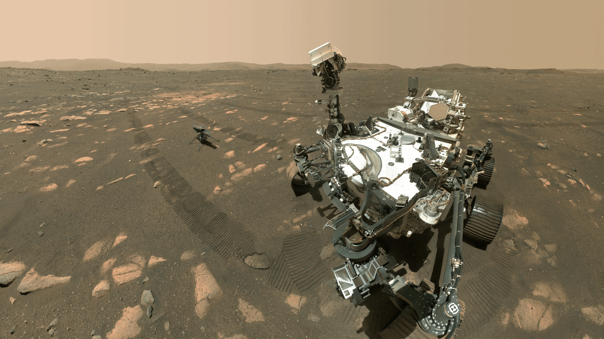
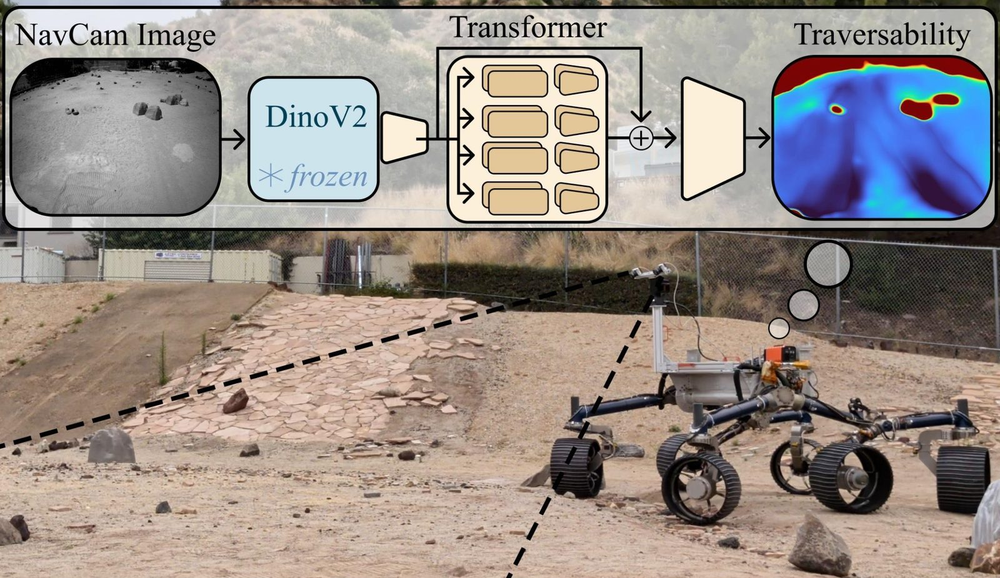
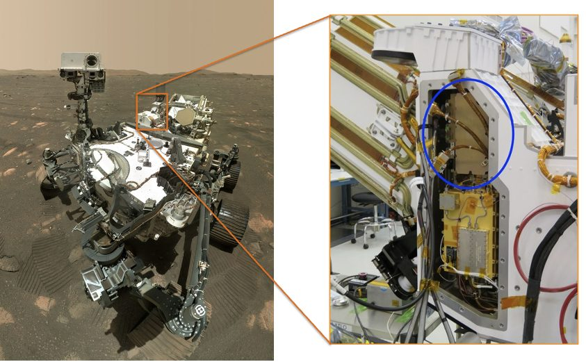
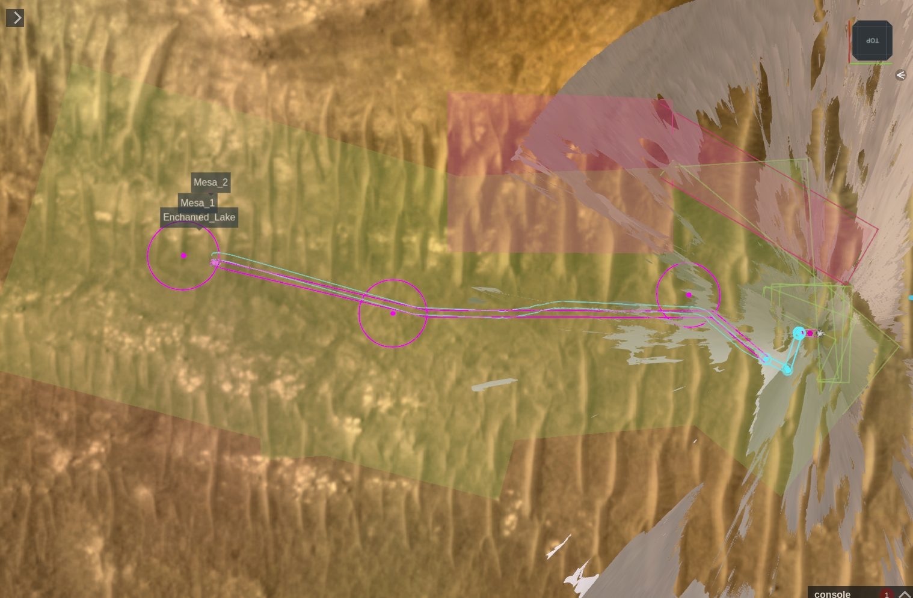
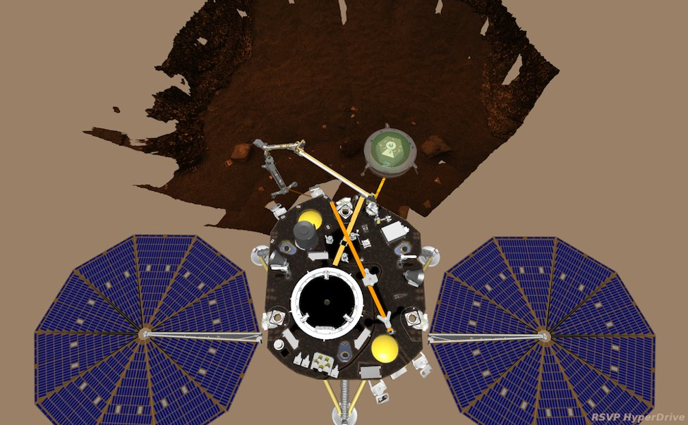
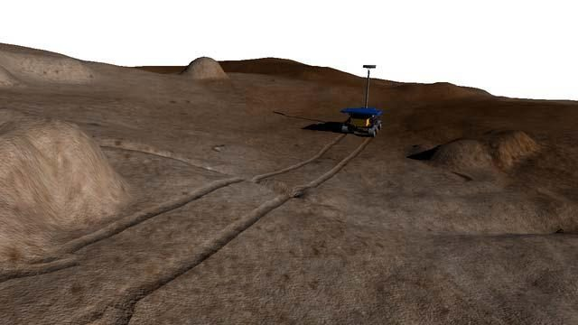
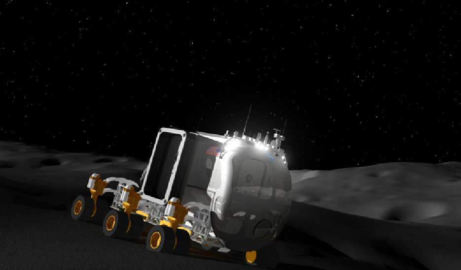

Robotics Software Engineer, NASA Jet Propulsion Laboratory

Perseverance and Ingenuity, sol 46 (April 6, 2021). Taken by the
WATSON camera on the end of the rover's arm.
Credit: NASA/JPL-Caltech/MSSS.
About
I'm a robotics software engineer at JPL and group lead of Robotic Operations
and Tools (358T). I've been at the lab since 2007, when I
started as a student intern.
On Mars 2020 I led development of SSim (Surface Simulation), which
runs the rover's flight software against every command sequence
before we uplink it to Perseverance, and I used it to fuzz the
flight software. I also wrote parts of the rover's flight
software, including the module that commands the Ingenuity
helicopter. In operations I've been a Helicopter Integration
Engineer and, since 2022, a rover driver.
Since 2023 I've worked on the rover flight software and simulation
for Perseverance's onboard global localization. It runs on a
commercial Snapdragon processor in the rover's helicopter base
station, so we also had to protect it from radiation in software. I'm now PI of a JPL task to make surface
operations cheaper: SpaceWasm, portable global localization,
learned navigation, and automated downlink and sequencing tools.
Before that I led robotic simulation for InSight, and later was
simulation lead for Mars Sample Return and ground software lead
for CADRE. Outside JPL I used to develop the Python tools
pyflakes and autoflake.
PI, Low-Cost High-Performance Surface Operations for Mars, Moon, and Beyond
A JPL strategic R&TD task to make surface operations cheaper:
more autonomy on the vehicle, more automation on the ground, for
any mission and not just Mars 2020. Each piece is tested against
Mars 2020 data on flight or flight-like hardware.
SpaceWasm: a flight-compliant WebAssembly interpreter, so one
autonomy implementation can run sandboxed on different vehicles
and flight software. It's integrated into F Prime. Firefly is
integrating it, and Moonfall and Skyfall are evaluating it.
GitHub featured it in
Octoverse 2026.
Global localization without GPS, extended beyond Perseverance to
the Moon and to helicopters. All of the lunar terrain vehicle
vendors have said they intend to use it.
A traversability model pretrained on about 10,000 Perseverance
image/waypoint pairs. Its maps feed the ENav planner, and it runs
on the Scarecrow test rover.
DownlinkDigest, which writes telemetry summaries from downlink.
It could save about two hours per planning cycle.
SequenceAgent, which generates, simulates, and validates command
sequences. We demonstrated it on Perseverance abrasion planning.

The traversability model on Scarecrow in the JPL Mars Yard: NavCam image in, traversability map out.
From the task summary. NASA/JPL-Caltech.
Robotics section, JPL. The group writes the flight and ground
software used to operate robots: flight-software-in-the-loop
simulation, sequence validation, 3D visualization, and the RSVP
tool suite. Our open-source work includes Hermes, Honeycomb, and
SpaceWasm.
2023–present
Perseverance Onboard Global Localization
Perseverance's position uncertainty grows as it drives. When it
gets too large the rover stops and waits for the ground to
relocalize it. Onboard global localization matches NavCam
panoramas against a HiRISE orbital map on board instead. Over 264
panoramas the error averaged 0.36 m. It runs on the Snapdragon 801
in the Helicopter Base Station, the commercial processor that
relayed Ingenuity's data, as a co-processor to the rover's RAD750.
Worked on the rover flight software: commands to send
arbitrarily large files to the base station, wait on it, and
bring results back without making a data product, and to apply
the localization result to the rover's pose.
Extended SSim with part of the base station's F Prime flight
software and a simulated serial link to the rover. It ran the
whole rover–base station exchange end to end in under a minute,
and was the main testbed for the flight software updates.
The Snapdragon isn't radiation hardened. On Mars, weak DRAM bits
made redundant runs disagree. We fixed it in software: a memory
test, a program that keeps bad pages out of use, CPU throttling,
and a rover flight software hot patch that accepts two runs
that agree within 10 cm.
With Columbia University, worked on software radiation
protection for commodity processors in space (HotNets '23,
ASPLOS '26). Radshield's version of the localization ran in 26%
of the time of the serial, radiation-hardened approach.
First closed-loop use was on sol 1762 (February 2, 2026), after a
159 m autonomous drive. Position uncertainty went from 8.4 m to
1.5 m.

The Helicopter Base Station (circled). Its Snapdragon 801 talks to the rover's RAD750 over a serial link
capped at 10 KB/s. From Verma et al., IEEE Aerospace 2024. NASA/JPL-Caltech/MSSS.
Led a team of ten building SSim. SSim takes the command
sequences, the onboard state from the latest downlink, terrain
maps, and onboard files, and runs the rover's flight software on
them. It outputs the event records and the rover's kinematic
state history. Every plan is simulated in SSim before uplink.
Robotic operations runs about 60 simulations per planning day,
about 20 seconds each.
Led development of RSVP for Mars 2020. MobSketch shows SSim
results next to the planned drive, so rover planners can change
drives until uplink lockdown instead of freezing them early as
on MER and MSL.
Fuzzed the flight software through SSim with AFL and with a
Python fuzzer against SSim's web service. Both generate command
sequences from the flight command dictionary. They found tens of
fatal flight software bugs, which were fixed before we hit them
on Mars. Static analysis with commercial, open-source, and
in-house tools found hundreds more before integrated testing.
Wrote the rover flight software module that commands Ingenuity.
In operations I was a Helicopter Integration Engineer, the
rover-side role that plans each sol's helicopter commanding and
the rover's relay of its data.
Wrote a flight software module for rover navigation, and led two other developers writing the PIXL instrument manager.
Worked around a hardware camera problem in software. Without the
workaround the rover assembly schedule would have slipped about a
month.
Set up continuous integration for flight software in place of the
weekly build. Wrote a build system that built the flight software
in minutes instead of an hour.
A directed drive I planned through sand ripples on sol 1849 (May 3, 2026). My own 3D reconstruction,
from the Navcam stereo pairs taken along the drive, using only public data. Navcam images NASA/JPL-Caltech.

The sol 555 drive in MobSketch. Planned path in magenta, SSim's simulated path in blue, keep-in zones
green, keep-out zones red. From Verma et al., IEEE Aerospace 2023. NASA/JPL-Caltech.
Led development of RSVP for InSight's arm, used to plan and check
the arm motions that placed the seismometer, heat probe, and wind
and thermal shield. Connected InSight flight software to RSVP.
Wrote algorithms that scored candidate instrument placement sites by terrain roughness and arm workspace.

Sequencing the seismometer placement in RSVP HyperDrive. NASA/JPL-Caltech.
3D visualization for the DARTS simulation tools (Dspace, DspaceOgre), including GPU terrain rendering of planet-scale datasets.
Real-time 3D visualization of Curiosity during entry, descent, and landing on landing night.
Interfaced MSL flight software with FPGA stereo vision for Mars Rover Fast Traverse and tested it on the Vehicle System Test Bed.
Simulation for lunar surface operations, ground vehicles, and the Asteroid Redirect Mission capture testbed.

Wheel tracks drawn on clipmapped terrain as a simulated rover drives. From Myint et al., SMC-IT 2011.
NASA/JPL-Caltech.

The Lunar Electric Rover, which I modeled and rendered, in the Lunar Surface Operations Simulator. From Howard et al., IEEE Aerospace 2011.
NASA/JPL-Caltech.
Vehicle Dynamics Models for Onboard Motion Planning.
R. Mukherjee, T. Howard, S. Myint, J. Chang, J. Craft.
ASME IDETC, DETC2014-34831.
M3TK: A Robot Mobility and Manipulation Modeling Toolkit.
R. Mukherjee, S. Myint, J. Chang, I. Kim, J. Craft, M. Pomerantz, J. Kim, L. Peterson.
ASME IDETC, DETC2014-34832.
Modeling and Simulation of Asteroid Retrieval Using a Flexible Capture Mechanism.
H. F. Grip, M. Ono, J. Balaram, J. Cameron, A. Jain, C. Kuo, S. Myint, M. Quadrelli.
IEEE Aerospace Conference, Big Sky, MT.
2013
Real-Time and High-Fidelity Simulation Environment for Autonomous Ground Vehicle Dynamics.
J. Cameron, S. Myint, C. Kuo, A. Jain, H. F. Grip, P. Jayakumar, J. Overholt.
NDIA Ground Vehicle Systems Engineering and Technology Symposium, Troy, MI.
End-to-End Dexterous Manipulation with Deliberate Interactive Estimation.
N. Hudson, T. Howard, J. Ma, A. Jain, M. Bajracharya, S. Myint, C. Kuo, L. Matthies, P. Backes, P. Hebert, T. Fuchs, J. Burdick.
ICRA.
A KML Interface for Dynamic Simulation of Robotic Planetary Exploration.
T. Howard, J. Cameron, S. Myint, H. Nayar, A. Jain.
IEEE Aerospace Conference, Big Sky, MT.
2010
Surface Operations Analysis for Lunar Missions.
H. Nayar, J. Balaram, J. Cameron, M. DiCicco, T. Howard, A. Jain, Y. Kuwata, C. Lim, R. Mukherjee, S. Myint, A. Malkovic, M. Pomerantz, S. Wall.
AIAA SPACE 2010.
2009
Recent Developments on a Simulator for Lunar Surface Operations.
H. Nayar, A. Jain, J. Balaram, J. Cameron, C. Lim, R. Mukherjee, M. Pomerantz, L. Reder, S. Myint, N. Serrano, S. Wall.
AIAA SPACE 2009.
SpaceWasm and Honeycomb are JPL projects. GitHub featured SpaceWasm
in
Octoverse 2026.
I created autoflake and later transferred it to PyCQA to maintain;
it still gets about 5 million downloads a month from PyPI. I also
used to develop pyflakes.
2026 JPL Team Award: developing and launching JPL's Rover Operations Center, for surface operations and use of AI in operations
2025 NASA Group Achievement Award: development, V&V, and delivery of onboard global localization to Perseverance
2024 NASA Group Achievement Award: coordinated Ingenuity and Perseverance operations through low-power winter conditions
2024 NASA Group Achievement Award: Mars 2020 mobility and robotic arm operations processes
2024 NASA Group Achievement Award: Mars 2020 robotic operations processes, through commissioning and record-setting surface operations
2024 NASA Group Achievement Award: commanding Perseverance's mobility and arm systems
2024 NASA Group Achievement Award: R13 flight software for Curiosity's primary computer
2024 JPL Team Award: Ingenuity helicopter campaign, 72 flights on Mars
2024 JPL Voyager Award: improving SSim and its controls in RSVP, including faster execution and flight-like AutoNav timing
2023 NASA Exceptional Public Achievement Medal, for leading development of SSim for validation and verification of all uplink sequences to Perseverance
2023 JPL Explorer Award, for delivering SSim for operating Perseverance on Mars
2023 NASA Group Achievement Award: NASA's first collaborative targeting, automated sequencing, and flight-software-in-the-loop simulation toolset for robotic operations
2023 JPL Team Award: NPM-Direct, which analyzes flight software and generates an NPM-decoding map
2022 JPL Team Award: 5 km of driving in one month during the Mars 2020 Rapid Traverse campaign
2021 JPL Discovery Award: tactical support of SSim through SOX checkout and first-time activities
2021 JPL Team Award: technical leadership in developing SSim
2021 JPL Team Award: Mars 2020 RSVP and SSim for surface robotic operations
2020 JPL Team Award: Mars 2020 cruise, entry, descent, and landing flight software
2010–2019
2019 JPL Voyager Award: simulation and validation capabilities in SSim
2019 NASA Group Achievement Award: InSight Ground Data System
2019 NASA Group Achievement Award: InSight Instrument Deployment System
2019 NASA Group Achievement Award: InSight Wind and Thermal Shield
2019 JPL Team Award: command, simulation, and telemetry tools for the Mars 2020 V&V testbeds
2018 JPL Discovery Award: integration, test, and operations readiness of the InSight IDS
2017 NASA Group Achievement Award: Curiosity surface operations
2016 JPL Team Award: visualization of robot arm target positions and orientations
2016 JPL Discovery Award: leading the Mars 2020 SSim task
2015 JPL Team Award: View Shed capability in RSVP
2015 JPL Team Award: UGV night operations, sensor fusion, and coordinated tactical behaviors
2013 NASA Group Achievement Award: landing of Curiosity at Gale Crater
2013 NASA Group Achievement Award: Curiosity surface mission at Gale Crater
2013 JPL Discovery Award: rendering of an orbiting aerosol cloud simulation for NIAC
2013 JPL Team Award: real-time 3D visualization of MSL during entry, descent, and landing
2011 JPL Team Award: Lunar Sample Return robotics demonstration
2011 NASA Tech Brief Award: DspaceOgreTerrain
2010 NASA Tech Brief Award: DspaceOgre
2010 JPL Mariner Award: multi-gigapixel terrain modeling and visualization software